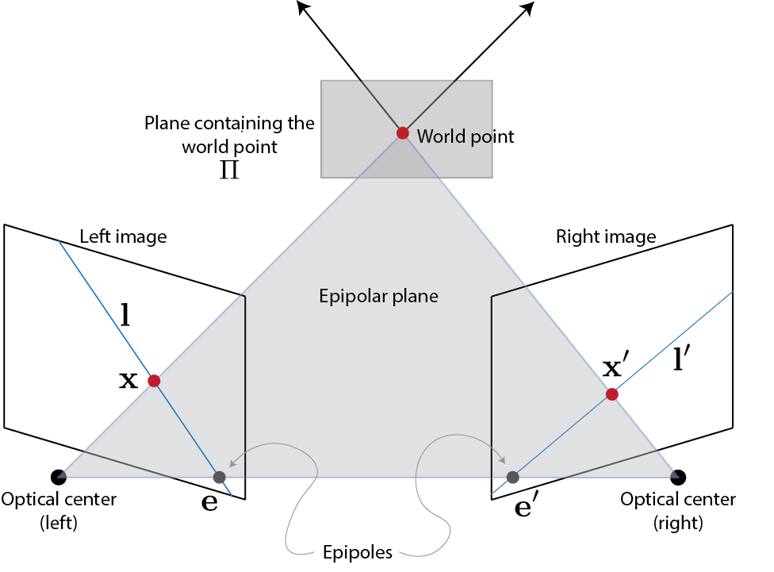
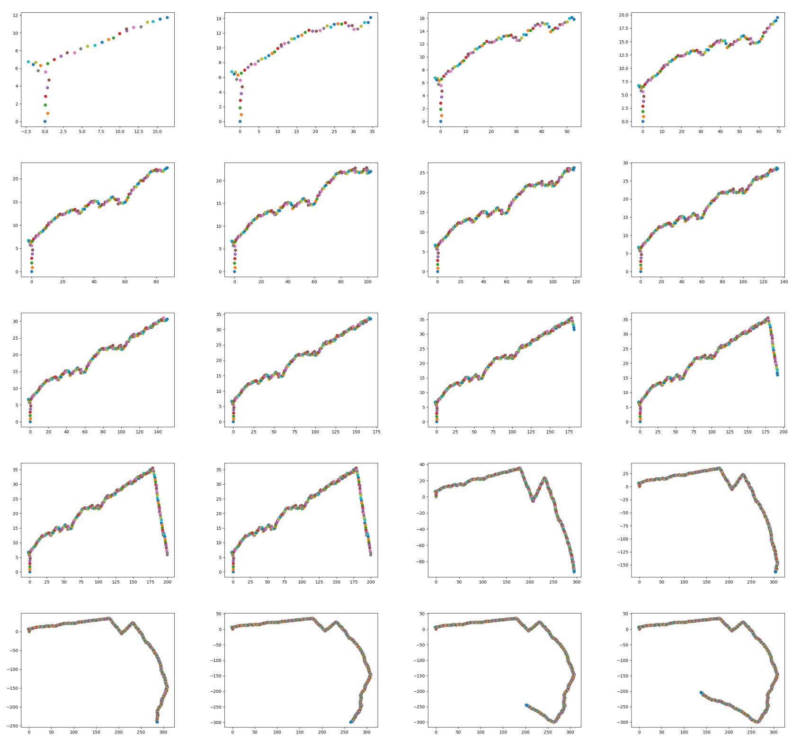

Visual Odometry is a crucial concept in Robotics Perception for estimating the trajectory of the robot (the camera on the robot to be precise). The concepts involved in Visual Odometry are quite the same for SLAM which needless to say is an integral part of Perception. In this project we are given frames of a driving sequence taken by a camera in a car, and the scripts to extract the intrinsic parameters.
1. Bayer Format Conversion:
The first step in the project was the preparation of the given dataset and reading all the images in the dataset. The input images are in Bayer format on which demosaicing function with GBRG alignment was used. Thus, the Bayer pattern encoded image img was converted to a color image using the opencv function:
color_image = cv2.cvtColor(img, cv2.COLOR_BayerGR2BGR)
2. Camera Parameter Extraction:
The next step in the data preparation phase was to extract the camera parameters using ReadCameraModel.py as follows:
fx, fy, cx, cy, G_camera_image, LUT = ReadCameraModel('./model')
3. Image Undistortion:
The images in the given dataset were further Undistorted using the current frame and next frame using UndistortImage.py:
undistorted_image = UndistortImage(originalimage, LUT)
To estimate the 3D motion (translation and rotation) between successive frames in the sequence, the following steps were followed.
There are a number of algorithms available to find the keypoints and the descriptors of the two images. The algorithms generally used are:
→ ORB (Oriented fast and Rotated Brief)
→ SIFT (Scale Invariant Feature Transform)
→ SURF (Speeded up Global Features)
For the current project we tried the ORB and the SIFT Algorithms. SIFT algorithm uses the sift.detect() function to find the keypoints in the images. ORB is computationally faster and has a good matching performance as compared to SIFT and SURF algorithms. These algorithms provide with the key points in both the images. Once the keypoints and descriptor objects are obtained, a matcher is used to find the points which match in the two images for that we have used the Brute force keypoint matcher that uses orb descriptors.
Once the matching points were obtained they were accessed. The result of matches = bf.match(des1, des2) line is a list of DMatch objects. This DMatch object has following attributes:
→ DMatch.distance - Distance between descriptors. The lower, the better it is.
→ DMatch.trainIdx - Index of the descriptor in train descriptors
→ DMatch.queryIdx - Index of the descriptor in query descriptors
→ DMatch.imgIdx - Index of the train image.
Thus, the matching points are obtained which we stored in the list to access it for later use.
The fundamental matrix (F) is a 3x3 matrix that relates the matching point between the two images taken from different views. The concept of epipolar geometry (The epipolar geometry is the intrinsic projective geometry between two views) is used to derive the fundamental matrix.
Figure: Concept of Epipolar Geometry
When a point X is viewed from two different angles in 3d, the same point appears as two different points x and x' and they are the corresponding point. Key concepts:
→ Epipole is the point of intersection of the line joining the camera centers with the image plane.
→ Epipolar plane is the plane containing the baseline.
→ Epipolar line is the intersection of an epipolar plane with the image plane. All the epipolar lines intersect at the epipole.
The F matrix is the algebraic representation of the epipolar geometry. For the points in the two images $x_i$ and $x'_i$, the fundamental matrix satisfies the epipolar constraint:
$$x'^T_i F x_i = 0$$
The above condition is known as the epipolar constraint or the correspondence condition. Thus, a homogeneous transform can be setup to get the 9 values of the fundamental matrix:
$$x_i x'_i f_{11} + x_i y'_i f_{21} + x_i f_{31} + y_i x'_i f_{12} + y_i y'_i f_{22} + y_i f_{32} + x'_i f_{13} + y'_i f_{23} + f_{33} = 0$$
In F matrix estimation, each point only contributes one constraint as the epipolar constraint is a scalar equation. Thus, we require at least 8 points to solve the above homogenous system. That is why it is known as Eight-point algorithm.
The above homogeneous equation which is of the form $Ax = 0$ can be solved using Singular Value Decomposition. Thus, on applying SVD the decomposition of the matrix $A = USV^T$ can be obtained, here U and V are the orthonormal matrices and S is the diagonal matrix containing the singular values.
If F has a full rank then it will have an empty null-space i.e. it won't have any point that is on entire set of lines. Thus, there wouldn't be any epipoles.
The algorithms such as SIFT and ORB are noisy. Some of the matching points are incorrect which are called the outliers. Thus, in order to get better results, we need to perform outlier rejection. Various algorithms are available for the rejection of outliers such as least squaring, RANSAC etc. Here we have used RANSAC algorithm to find the inliers and get the best fundamental matrix.
RANSAC Algorithm:
→ Initialize: n = 0
→ For i = 1:M iterations do:
→ Choose 8 correspondences randomly
→ Estimate Fundamental Matrix F
→ Initialize S = ∅
→ For j = 1:N correspondences do:
→ If |x'^T_j F x_j| < ε then S = S ∪ {j}
→ If n < |S| then:
→ n = |S|
→ S_m = S
→ Return best S_m
The essential matrix is used to determine the relative camera poses between image frames. The essential matrix has 5 degrees of freedom and in this case it is computed from the fundamental matrix and the camera calibration matrix.
The Essential matrix E is expressed as:
$$E = K^T F K$$
Where, K is the camera calibration matrix and F is the Fundamental matrix.
Next, the rotation and translations have to be calculated from the essential matrix. However, the E matrix should be constrained to have a rank 2. This is achieved through singular value decomposition in the following way, E can be expressed as:
$$E = USV^T = U \begin{bmatrix} 1 & 0 & 0 \\ 0 & 1 & 0 \\ 0 & 0 & 0 \end{bmatrix} V^T$$
By constraining the value of the diagonal matrix and setting the last value of the diagonal to 0, this will constraint the rank of the Essential matrix E to 2. This in turn will provide the corrected Essential matrix that can be used to determine the camera poses.
Camera pose consists of Rotation and translation of the camera with respect to the world frame. The camera pose has 6 degrees of freedom, both the rotation and the translation have 3 degrees of freedom (R-(Roll, Pitch, Yaw) and T-(X, Y, Z)).
The camera configurations can be obtained from the Essential Matrix E. Four possible camera configurations can be obtained from the essential matrix E, which are expressed as: $(C_1, R_1)$, $(C_2, R_2)$, $(C_3, R_3)$, $(C_4, R_4)$.
Here, C is the camera center and R is the Rotation matrix. These are calculated by decomposing E matrix through SVD ($E = UDV^T$) and using the W matrix instead of the diagonal matrix D.
$$W = \begin{bmatrix} 0 & -1 & 0 \\ 1 & 0 & 0 \\ 0 & 0 & 1 \end{bmatrix}$$
The solution for the Translation is obtained from the last column of the U matrix. The configurations of the camera pose can be expressed as:
$$1. \; C_1 = U(:, 3) \text{ and } R_1 = UWV^T$$ $$2. \; C_2 = -U(:, 3) \text{ and } R_2 = UWV^T$$ $$3. \; C_3 = U(:, 3) \text{ and } R_3 = UW^TV^T$$ $$4. \; C_4 = -U(:, 3) \text{ and } R_4 = UW^TV^T$$
In addition, the determinant $\det(R) = 1$. If $\det(R) = -1$, the camera pose must be corrected i.e. $C = -C$ and $R = -R$, this is done to reduce error. Finally, the camera pose P is calculated using the following equations:
$$P = KR[I_{3×3} - C]$$
The next step would be to determine and select the best camera pose from the 4 different camera poses computed.
Linear triangulation is used to determine the correct camera pose, this is achieved by checking for the Cheirality Condition. Which basically means that the points are in front of both the cameras. This is done using linear least squares method to check for depth positivity Z of the points with respect to the camera center. A 3D point X is in front of the camera if the following condition is met: $r_3(X - C) > 0$ where $r_3$ is the third row of the rotation matrix (z-axis of the camera). Since not all points satisfy this condition, this can be used to determine the correct pose.
For two camera poses, the linearly triangulated points X, the locations of the 3D points are refined to minimize reprojection error which is computed by measuring the error between measurement and projected 3D point:
$$\min_X \sum_{j=1,2} \left( \left(u^j - \frac{P_1^{jT}\bar{X}}{P_3^{jT}\bar{X}}\right)^2 + \left(v^j - \frac{P_2^{jT}\bar{X}}{P_3^{jT}\bar{X}}\right)^2 \right)$$
$\bar{X}$ is the homogeneous representation of X and $P^T_i$ is each row of camera projection matrix P. The minimization is highly nonlinear due to the divisions.
The linear PnP minimizes algebraic error. In non-linear perspective-n-points, the camera pose is refined to minimize the reprojection error between the measurement and the projected 3D point by enforcing orthogonality of the rotation matrix $R = R(q)$:
$$\min_{C,q} \sum_{i=1,J} \left( \left(u^i - \frac{P_1^{iT}\bar{X}_j}{P_3^{iT}\bar{X}_j}\right)^2 + \left(v^i - \frac{P_2^{iT}\bar{X}_j}{P_3^{iT}\bar{X}_j}\right)^2 \right)$$
We compute P such that $P = KR[I_{3×3} - C]$, $\bar{X}$ is the homogeneous representation of X and q is the 4 dimensional quaternion. The minimization is highly non-linear owing to the divisions and quaternion parameterization.
Using the built-in functions cv2.findEssentialMat and cv2.recoverPose from OpenCV, trajectory estimation was also performed for comparison.
Figure: Trajectory computed using built-in OpenCV functions
Following are the problems we encountered while working on this project:
1) During the fundamental matrix calculation the values of some of the elements came out to be larger than is recommended.
2) We found out that the matching points obtained using the SIFT and ORB algorithms came out to be different.
3) We tried plotting the camera centre position using different computers but every time the curve came out to be different.
The visual odometry pipeline was successfully implemented, estimating the camera trajectory from successive image frames. The results demonstrate the effectiveness of the Eight-Point Algorithm combined with RANSAC for robust fundamental matrix estimation, followed by camera pose recovery and triangulation.
Figure: Visual Odometry trajectory results showing the estimated camera path
1. Course Material - Perception for Autonomous Robots, University of Maryland
2. Lecture on Fundamental Matrix: YouTube Tutorial
3. Project Reference: CMSC733 Project Page
4. OpenCV Library Documentation